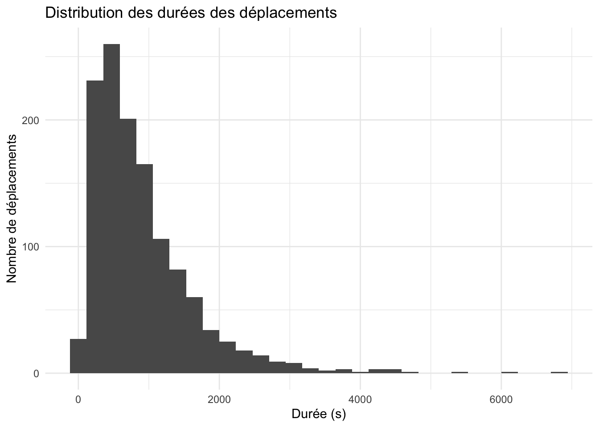
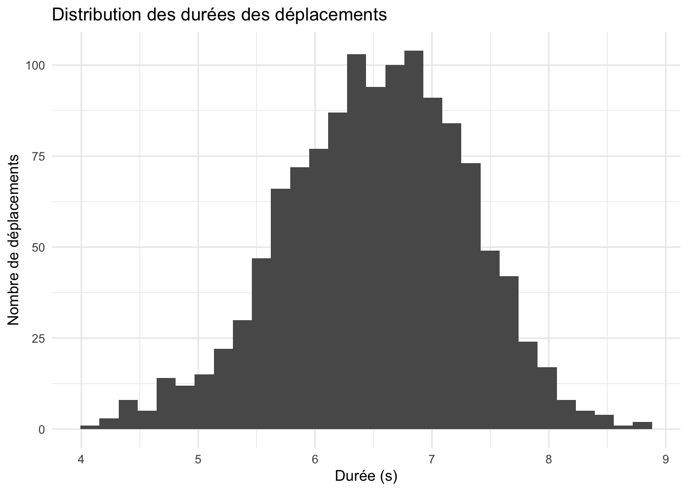
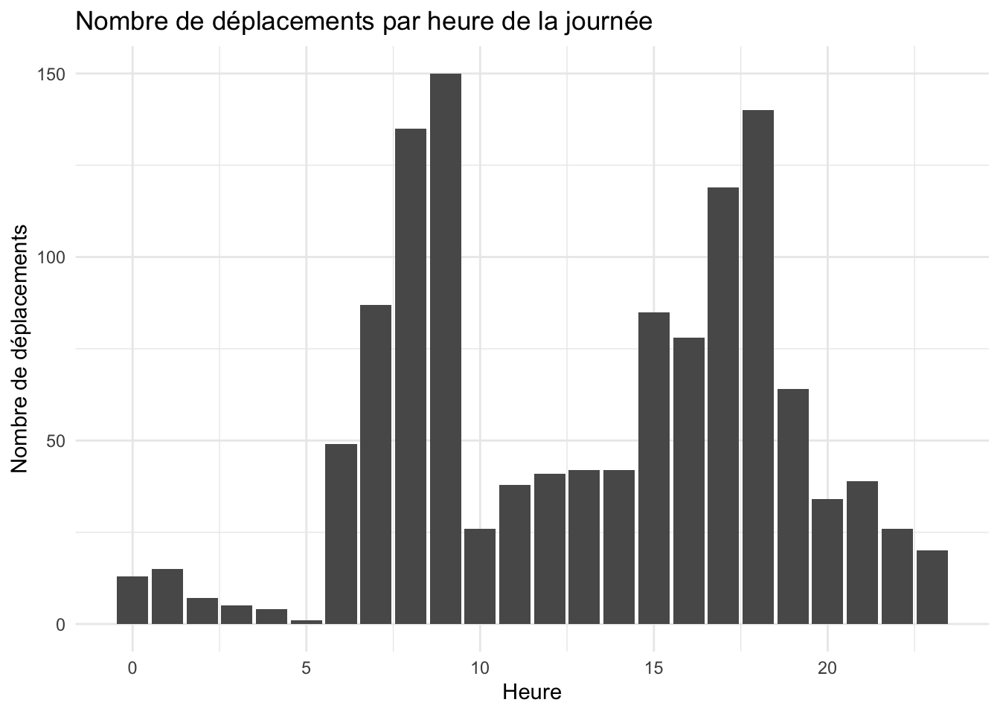

TODO: Considérer des transformations potentielles pour la variable réponse. Ex: ln
TODO: Considérer des transformations potentielles pour les variables explicatives. Ex: polynômes
TODO: Considérer des interactions potentielles entre les variables explicatives
TODO: Vérifier l’impact d’enlever les valeurs aberrantes sur la précision des modèles
TODO:
“Chaque fois qu’un modèle statistique est employé, veillez à : - rapporter les coefficients ou les différences estimées (avec des unités), avec une estimation de l’incertitude, - fournir des interprétations des paramètres sur une échelle adéquate, - tirer des conclusions qui reflètent le contexte, - discuter de la validité de vos analyses, - discuter de toute lacune ou limitation de vos modèles.”
Import et formatage des données
Code
library(tidyverse)library(gridExtra)# On charge les donnéesdata_filename <-"MATH60604-projet-bixi_partie1_equipe1.csv"raw_data <-read.csv(data_filename)# On convertit les colonnes aux types appropriésdata <- raw_data %>%mutate(date =ymd_hms(dep),jour =as.factor(jour),mem =as.logical(mem),pointe =as.factor(pointe) ) %>%select(-c(dep))# On ajoute des colonnes utiles à l'analysedata <- data %>%mutate(hour =as.integer(format(date, format ="%H")),day =as.Date(date),is_weekend = jour %in%c("samedi", "dimanche") )
Analyse exploratoire

La distribution des durées des déplacements semble être asymétrique à droite. Il pourrait être intéressant de considérer une transformation logarithmique pour la variable réponse.

dur mem jour temp
Min. :4.111 Mode :logical dimanche:180 Min. : 4.90
1st Qu.:5.978 FALSE:630 jeudi :180 1st Qu.:15.80
Median :6.561 TRUE :630 lundi :180 Median :18.80
Mean :6.522 mardi :180 Mean :18.61
3rd Qu.:7.072 mercredi:180 3rd Qu.:21.90
Max. :8.837 samedi :180 Max. :28.20
vendredi:180
prec pointe date hour
Min. : 0.000 1:420 Min. :2021-05-01 07:19:48.00 Min. : 0.00
1st Qu.: 0.000 2:420 1st Qu.:2021-06-15 18:42:34.00 1st Qu.: 8.00
Median : 0.000 3:420 Median :2021-07-31 22:31:05.00 Median :14.00
Mean : 1.359 Mean :2021-07-31 21:36:53.00 Mean :13.11
3rd Qu.: 0.300 3rd Qu.:2021-09-17 10:35:07.25 3rd Qu.:18.00
Max. :31.700 Max. :2021-10-30 18:39:50.00 Max. :23.00
day is_weekend
Min. :2021-05-01 Mode :logical
1st Qu.:2021-06-15 FALSE:900
Median :2021-07-31 TRUE :360
Mean :2021-07-31
3rd Qu.:2021-09-17
Max. :2021-10-30
[1] "Combien de déplacements par jour de la semaine?"
[1] "Combien de déplacements par heure de la journée?"

[1] "Combien de déplacements par jour?"
QUESTION 1.1 : En moyenne, les membres de BIXI effectuent-ils des trajets plus courts que les non-membres?
Nous sommes intéressés par l’hypothèse suivante: \(\mathbb{H}_0: \beta_1 = 0\)
# On effectue un test t pour comparer les moyennesmodel <-lm(dur ~ mem, data = data)summary(model)$coefficients
Estimate Std. Error t value Pr(>|t|)
(Intercept) 6.6495494 0.03077932 216.039533 0.000000e+00
memTRUE -0.2541166 0.04352853 -5.837933 6.718517e-09
transform_coefs <-function(log_model) {# Obtenir les coefficients et les intervalles de confiance du modèle coefficients <-summary(log_model)$coefficients confint_values <-confint(log_model)# Extraire les résultats pour la variable d'intérêt, ici 'mem' beta_mem <- coefficients['memTRUE', 'Estimate'] # Coefficient pour les membres p_value_mem <- coefficients['memTRUE', 'Pr(>|t|)'] # P-value associée# Calculer l'intervalle de confiance à 95% ci_lower <- confint_values['memTRUE', 1] # Borne inférieure ci_upper <- confint_values['memTRUE', 2] # Borne supérieure# Exponentier le coefficient et les intervalles pour revenir à l'échelle d'origine exp_beta_mem <-exp(beta_mem) exp_ci_lower <-exp(ci_lower) exp_ci_upper <-exp(ci_upper)return(c(exp_ci_lower, exp_ci_upper))}ci <-transform_coefs(model)
On rejette l’hypothèse nulle au niveau de signification de 0.05. Oui, les membres de BIXI effectuent des trajets entre et 0.7121169 secondes plus courts que les non-membres, à un niveau de significativité de 6.7185173^{-9}.
Réponse 1.2 : Oui, les résultats sont les mêmes si l’on tient compte de l’utilisation en fin de semaine ou en semaine. L’effet est plus significatif en fin de semaine.
QUESTION 2.1 : Est-ce que la durée des trajets est influencée par la météo?
Question piège? On ne peut pas établir de lien de causalité entre la météo et la durée des trajets. On peut seulement dire qu’il y a une corrélation entre les deux.
On test d’abord l’impact des précipitations
Code
data <- data %>%mutate(is_raining = prec >0)# Avec indicateur binaire de pluiemodel <-lm(dur ~ is_raining, data=data)summary(model)
Call:
lm(formula = dur ~ is_raining, data = data)
Residuals:
Min 1Q Median 3Q Max
-2.36925 -0.53166 0.03141 0.55566 2.35683
Coefficients:
Estimate Std. Error t value Pr(>|t|)
(Intercept) 6.54436 0.02714 241.137 <2e-16 ***
is_rainingTRUE -0.06424 0.04651 -1.381 0.167
---
Signif. codes: 0 '***' 0.001 '**' 0.01 '*' 0.05 '.' 0.1 ' ' 1
Residual standard error: 0.7824 on 1258 degrees of freedom
Multiple R-squared: 0.001514, Adjusted R-squared: 0.0007206
F-statistic: 1.908 on 1 and 1258 DF, p-value: 0.1674
Code
# Avec niveau de précipitationmodel <-lm(dur ~ prec, data=data)summary(model)
Call:
lm(formula = dur ~ prec, data = data)
Residuals:
Min 1Q Median 3Q Max
-2.41471 -0.53709 0.03357 0.55064 2.30902
Coefficients:
Estimate Std. Error t value Pr(>|t|)
(Intercept) 6.528871 0.023263 280.657 <2e-16 ***
prec -0.004693 0.005452 -0.861 0.389
---
Signif. codes: 0 '***' 0.001 '**' 0.01 '*' 0.05 '.' 0.1 ' ' 1
Residual standard error: 0.7827 on 1258 degrees of freedom
Multiple R-squared: 0.0005888, Adjusted R-squared: -0.0002057
F-statistic: 0.7411 on 1 and 1258 DF, p-value: 0.3895
# TODO: Vérifier si le facteur par défaut est le bonweek_days <- week_days %>%mutate(pointe =fct_relevel(pointe, c("3", "2", "1")), is_rush = pointe %in%c("1", "2"))model <-lm(dur ~ is_rush, data = week_days)summary(model)$coefficients
Estimate Std. Error t value Pr(>|t|)
(Intercept) 6.52078710 0.04517693 144.3388738 0.000000
is_rushTRUE -0.03088119 0.05533021 -0.5581252 0.576898
# On crée un graphique pour visualiser la distribution des distancesplot1 <-ggplot(week_ends, aes(x = dur, fill = mem)) +geom_histogram(bins =30) +labs(title ="Distribution des distances des déplacements en fin de semaine",x ="Durée (s)", y ="Nombre de déplacements" ) +theme_minimal()plot2 <-ggplot(week_days, aes(x = dur, fill = mem)) +geom_histogram(bins =30) +labs(title ="Distribution des distances des déplacements en semaine",x ="Durée (s)", y ="Nombre de déplacements" ) +theme_minimal()grid.arrange(plot1, plot2, ncol =1)